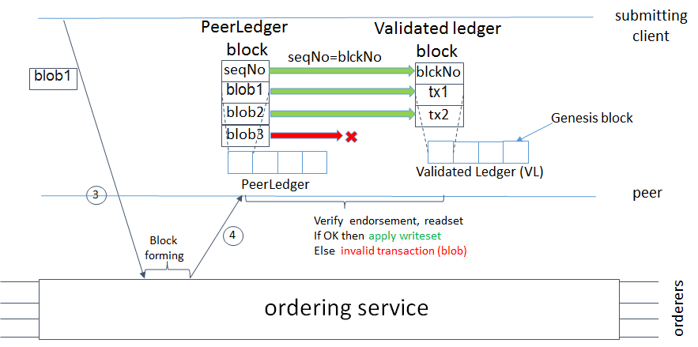

Architecture Explained
The Hyperledger Fabric architecture delivers the following advantages:
- Chaincode trust flexibility. The architecture separates trust assumptions for chaincodes (blockchain applications) from trust assumptions for ordering. In other words, the ordering service may be provided by one set of nodes (orderers) and tolerate some of them to fail or misbehave, and the endorsers may be different for each chaincode.
- Scalability. As the endorser nodes responsible for particular chaincode are orthogonal to the orderers, the system may scale better than if these functions were done by the same nodes. In particular, this results when different chaincodes specify disjoint endorsers, which introduces a partitioning of chaincodes between endorsers and allows parallel chaincode execution (endorsement). Besides, chaincode execution, which can potentially be costly, is removed from the critical path of the ordering service.
- Confidentiality. The architecture facilitates deployment of chaincodes that have confidentiality requirements with respect to the content and state updates of its transactions.
- Consensus modularity. The architecture is modular and allows pluggable consensus (i.e., ordering service) implementations.
Part I: Elements of the architecture relevant to Hyperledger Fabric v1
- System architecture
- Basic workflow of transaction endorsement
- Endorsement policies
Part II: Post-v1 elements of the architecture
- Ledger checkpointing (pruning)
- System architecture
The blockchain is a distributed system consisting of many nodes that communicate with each other. The blockchain runs programs called chaincode, holds state and ledger data, and executes transactions. The chaincode is the central element as transactions are operations invoked on the chaincode. Transactions have to be \"endorsed\" and only endorsed transactions may be committed and have an effect on the state. There may exist one or more special chaincodes for management functions and parameters, collectively called system chaincodes.
1.1. Transactions
Transactions may be of two types:
- Deploy transactions create new chaincode and take a program as parameter. When a deploy transaction executes successfully, the chaincode has been installed \"on\" the blockchain.
- Invoke transactions perform an operation in the context of previously deployed chaincode. An invoke transaction refers to a chaincode and to one of its provided functions. When successful, the chaincode executes the specified function - which may involve modifying the corresponding state, and returning an output.
As described later, deploy transactions are special cases of invoke transactions, where a deploy transaction that creates new chaincode, corresponds to an invoke transaction on a system chaincode.
Remark: This document currently assumes that a transaction either creates new chaincode or invokes an operation provided by an already deployed chaincode. This document does not yet describe: a) optimizations for query (read-only) transactions, b) support for cross-chaincode transactions.
1.2. Blockchain data structures
1.2.1. State
The latest state of the blockchain (or, simply, state) is modeled as a
versioned key/value store (KVS), where keys are names and values are
arbitrary blobs. These entries are manipulated by the chaincodes
(applications) running on the blockchain through put and get
KVS-operations. The state is stored persistently and updates to the
state are logged. Notice that versioned KVS is adopted as state model,
an implementation may use actual KVSs, but also RDBMSs or any other
solution.
More formally, state s is modeled as an element of a mapping
K -> (V X N), where:
Kis a set of keysVis a set of valuesNis an infinite ordered set of version numbers. Injective functionnext: N -> Ntakes an element ofNand returns the next version number.
Both V and N contain a special element \bot, which is in case of
N the lowest element. Initially all keys are mapped to (\bot,\bot).
For s(k)=(v,ver) we denote v by s(k).value, and ver by
s(k).version.
KVS operations are modeled as follows:
put(k,v), fork\in Kandv\in V, takes the blockchain statesand changes it tos'such thats'(k)=(v,next(s(k).version))withs'(k')=s(k')for allk'!=k.get(k)returnss(k).
State is maintained by peers, but not by orderers and clients.
State partitioning. Keys in the KVS can be recognized from their name to belong to a particular chaincode, in the sense that only transaction of a certain chaincode may modify the keys belonging to this chaincode. In principle, any chaincode can read the keys belonging to another chaincode. Support for cross-chaincode transactions, that modify the state belonging to two or more chaincodes is a post-v1 feature.
1.2.2 Ledger
Ledger provides a verifiable history of all successful state changes (we talk about valid transactions) and unsuccessful attempts to change state (we talk about invalid transactions), occurring during the operation of the system.
Ledger is constructed by the ordering service (see Sec 1.3.3) as a totally ordered hashchain of blocks of (valid or invalid) transactions. The hashchain imposes the total order of blocks in a ledger and each block contains an array of totally ordered transactions. This imposes total order across all transactions.
Ledger is kept at all peers and, optionally, at a subset of orderers. In
the context of an orderer we refer to the Ledger as to OrdererLedger,
whereas in the context of a peer we refer to the ledger as to
PeerLedger. PeerLedger differs from the OrdererLedger in that
peers locally maintain a bitmask that tells apart valid transactions
from invalid ones (see Section XX for more details).
Peers may prune PeerLedger as described in Section XX (post-v1
feature). Orderers maintain OrdererLedger for fault-tolerance and
availability (of the PeerLedger) and may decide to prune it at
anytime, provided that properties of the ordering service (see Sec.
1.3.3) are maintained.
The ledger allows peers to replay the history of all transactions and to reconstruct the state. Therefore, state as described in Sec 1.2.1 is an optional datastructure.
1.3. Nodes
Nodes are the communication entities of the blockchain. A \"node\" is only a logical function in the sense that multiple nodes of different types can run on the same physical server. What counts is how nodes are grouped in \"trust domains\" and associated to logical entities that control them.
There are three types of nodes:
- Client or submitting-client: a client that submits an actual transaction-invocation to the endorsers, and broadcasts transaction-proposals to the ordering service.
- Peer: a node that commits transactions and maintains the state and a copy of the ledger (see Sec, 1.2). Besides, peers can have a special endorser role.
- Ordering-service-node or orderer: a node running the communication service that implements a delivery guarantee, such as atomic or total order broadcast.
The types of nodes are explained next in more detail.
1.3.1. Client
The client represents the entity that acts on behalf of an end-user. It must connect to a peer for communicating with the blockchain. The client may connect to any peer of its choice. Clients create and thereby invoke transactions.
As detailed in Section 2, clients communicate with both peers and the ordering service.
1.3.2. Peer
A peer receives ordered state updates in the form of blocks from the ordering service and maintain the state and the ledger.
Peers can additionally take up a special role of an endorsing peer, or an endorser. The special function of an endorsing peer occurs with respect to a particular chaincode and consists in endorsing a transaction before it is committed. Every chaincode may specify an endorsement policy that may refer to a set of endorsing peers. The policy defines the necessary and sufficient conditions for a valid transaction endorsement (typically a set of endorsers\' signatures), as described later in Sections 2 and 3. In the special case of deploy transactions that install new chaincode the (deployment) endorsement policy is specified as an endorsement policy of the system chaincode.
1.3.3. Ordering service nodes (Orderers)
The orderers form the ordering service, i.e., a communication fabric that provides delivery guarantees. The ordering service can be implemented in different ways: ranging from a centralized service (used e.g., in development and testing) to distributed protocols that target different network and node fault models.
Ordering service provides a shared communication channel to clients and peers, offering a broadcast service for messages containing transactions. Clients connect to the channel and may broadcast messages on the channel which are then delivered to all peers. The channel supports atomic delivery of all messages, that is, message communication with total-order delivery and (implementation specific) reliability. In other words, the channel outputs the same messages to all connected peers and outputs them to all peers in the same logical order. This atomic communication guarantee is also called total-order broadcast, atomic broadcast, or consensus in the context of distributed systems. The communicated messages are the candidate transactions for inclusion in the blockchain state.
Partitioning (ordering service channels). Ordering service may support multiple channels similar to the topics of a publish/subscribe (pub/sub) messaging system. Clients can connect to a given channel and can then send messages and obtain the messages that arrive. Channels can be thought of as partitions - clients connecting to one channel are unaware of the existence of other channels, but clients may connect to multiple channels. Even though some ordering service implementations included with Hyperledger Fabric support multiple channels, for simplicity of presentation, in the rest of this document, we assume ordering service consists of a single channel/topic.
Ordering service API. Peers connect to the channel provided by the ordering service, via the interface provided by the ordering service. The ordering service API consists of two basic operations (more generally asynchronous events):
TODO add the part of the API for fetching particular blocks under client/peer specified sequence numbers.
broadcast(blob): a client calls this to broadcast an arbitrary messageblobfor dissemination over the channel. This is also calledrequest(blob)in the BFT context, when sending a request to a service.deliver(seqno, prevhash, blob): the ordering service calls this on the peer to deliver the messageblobwith the specified non-negative integer sequence number (seqno) and hash of the most recently delivered blob (prevhash). In other words, it is an output event from the ordering service.deliver()is also sometimes callednotify()in pub-sub systems orcommit()in BFT systems.
Ledger and block formation. The ledger (see also Sec. 1.2.2)
contains all data output by the ordering service. In a nutshell, it is a
sequence of deliver(seqno, prevhash, blob) events, which form a hash
chain according to the computation of prevhash described before.
Most of the time, for efficiency reasons, instead of outputting
individual transactions (blobs), the ordering service will group (batch)
the blobs and output blocks within a single deliver event. In this
case, the ordering service must impose and convey a deterministic
ordering of the blobs within each block. The number of blobs in a block
may be chosen dynamically by an ordering service implementation.
In the following, for ease of presentation, we define ordering service
properties (rest of this subsection) and explain the workflow of
transaction endorsement (Section 2) assuming one blob per deliver
event. These are easily extended to blocks, assuming that a deliver
event for a block corresponds to a sequence of individual deliver
events for each blob within a block, according to the above mentioned
deterministic ordering of blobs within a blocs.
Ordering service properties
The guarantees of the ordering service (or atomic-broadcast channel) stipulate what happens to a broadcasted message and what relations exist among delivered messages. These guarantees are as follows:
-
Safety (consistency guarantees): As long as peers are connected for sufficiently long periods of time to the channel (they can disconnect or crash, but will restart and reconnect), they will see an identical series of delivered
(seqno, prevhash, blob)messages. This means the outputs (deliver()events) occur in the same order on all peers and according to sequence number and carry identical content (blobandprevhash) for the same sequence number. Note this is only a logical order, and adeliver(seqno, prevhash, blob)on one peer is not required to occur in any real-time relation todeliver(seqno, prevhash, blob)that outputs the same message at another peer. Put differently, given a particularseqno, no two correct peers deliver differentprevhashorblobvalues. Moreover, no valueblobis delivered unless some client (peer) actually calledbroadcast(blob)and, preferably, every broadcasted blob is only delivered once.Furthermore, the
deliver()event contains the cryptographic hash of the data in the previousdeliver()event (prevhash). When the ordering service implements atomic broadcast guarantees,prevhashis the cryptographic hash of the parameters from thedeliver()event with sequence numberseqno-1. This establishes a hash chain acrossdeliver()events, which is used to help verify the integrity of the ordering service output, as discussed in Sections 4 and 5 later. In the special case of the firstdeliver()event,prevhashhas a default value. -
Liveness (delivery guarantee): Liveness guarantees of the ordering service are specified by a ordering service implementation. The exact guarantees may depend on the network and node fault model.
In principle, if the submitting client does not fail, the ordering service should guarantee that every correct peer that connects to the ordering service eventually delivers every submitted transaction.
To summarize, the ordering service ensures the following properties:
- Agreement. For any two events at correct peers
deliver(seqno, prevhash0, blob0)anddeliver(seqno, prevhash1, blob1)with the sameseqno,prevhash0==prevhash1andblob0==blob1; - Hashchain integrity. For any two events at correct peers
deliver(seqno-1, prevhash0, blob0)anddeliver(seqno, prevhash, blob),prevhash = HASH(seqno-1||prevhash0||blob0). - No skipping. If an ordering service outputs
deliver(seqno, prevhash, blob)at a correct peer p, such thatseqno>0, then p already delivered an eventdeliver(seqno-1, prevhash0, blob0). - No creation. Any event
deliver(seqno, prevhash, blob)at a correct peer must be preceded by abroadcast(blob)event at some (possibly distinct) peer; - No duplication (optional, yet desirable). For any two events
broadcast(blob)andbroadcast(blob'), when two eventsdeliver(seqno0, prevhash0, blob)anddeliver(seqno1, prevhash1, blob')occur at correct peers andblob == blob', thenseqno0==seqno1andprevhash0==prevhash1. - Liveness. If a correct client invokes an event
broadcast(blob)then every correct peer \"eventually\" issues an eventdeliver(*, *, blob), where*denotes an arbitrary value.
2. Basic workflow of transaction endorsement
In the following we outline the high-level request flow for a transaction.
Remark: Notice that the following protocoldoes not* assume that all transactions are deterministic, i.e., it allows for non-deterministic transactions.*
2.1. The client creates a transaction and sends it to endorsing peers of its choice
To invoke a transaction, the client sends a PROPOSE message to a set
of endorsing peers of its choice (possibly not at the same time - see
Sections 2.1.2. and 2.3.). The set of endorsing peers for a given
chaincodeID is made available to client via peer, which in turn knows
the set of endorsing peers from endorsement policy (see Section 3). For
example, the transaction could be sent to all endorsers of a given
chaincodeID. That said, some endorsers could be offline, others may
object and choose not to endorse the transaction. The submitting client
tries to satisfy the policy expression with the endorsers available.
In the following, we first detail PROPOSE message format and then
discuss possible patterns of interaction between submitting client and
endorsers.
2.1.1. PROPOSE message format
The format of a PROPOSE message is <PROPOSE,tx,[anchor]>, where tx
is a mandatory and anchor optional argument explained in the
following.
-
tx=<clientID,chaincodeID,txPayload,timestamp,clientSig>, whereclientIDis an ID of the submitting client,chaincodeIDrefers to the chaincode to which the transaction pertains,txPayloadis the payload containing the submitted transaction itself,timestampis a monotonically increasing (for every new transaction) integer maintained by the client,clientSigis signature of a client on other fields oftx.
The details of
txPayloadwill differ between invoke transactions and deploy transactions (i.e., invoke transactions referring to a deploy-specific system chaincode). For an invoke transaction,txPayloadwould consist of two fieldstxPayload = <operation, metadata>, whereoperationdenotes the chaincode operation (function) and arguments,metadatadenotes attributes related to the invocation.
For a deploy transaction,
txPayloadwould consist of three fieldstxPayload = <source, metadata, policies>, wheresourcedenotes the source code of the chaincode,metadatadenotes attributes related to the chaincode and application,policiescontains policies related to the chaincode that are accessible to all peers, such as the endorsement policy. Note that endorsement policies are not supplied withtxPayloadin adeploytransaction, buttxPayloadof adeploycontains endorsement policy ID and its parameters (see Section 3).
-
anchorcontains read version dependencies, or more specifically, key-version pairs (i.e.,anchoris a subset ofKxN), that binds or \"anchors\" thePROPOSErequest to specified versions of keys in a KVS (see Section 1.2.). If the client specifies theanchorargument, an endorser endorses a transaction only upon read version numbers of corresponding keys in its local KVS matchanchor(see Section 2.2. for more details).
Cryptographic hash of tx is used by all nodes as a unique transaction
identifier tid (i.e., tid=HASH(tx)). The client stores tid in
memory and waits for responses from endorsing peers.
2.1.2. Message patterns
The client decides on the sequence of interaction with endorsers. For
example, a client would typically send <PROPOSE, tx> (i.e., without
the anchor argument) to a single endorser, which would then produce
the version dependencies (anchor) which the client can later on use as
an argument of its PROPOSE message to other endorsers. As another
example, the client could directly send <PROPOSE, tx> (without
anchor) to all endorsers of its choice. Different patterns of
communication are possible and client is free to decide on those (see
also Section 2.3.).
2.2. The endorsing peer simulates a transaction and produces an endorsement signature
On reception of a <PROPOSE,tx,[anchor]> message from a client, the
endorsing peer epID first verifies the client\'s signature clientSig
and then simulates a transaction. If the client specifies anchor then
endorsing peer simulates the transactions only upon read version numbers
(i.e., readset as defined below) of corresponding keys in its local
KVS match those version numbers specified by anchor.
Simulating a transaction involves endorsing peer tentatively executing
a transaction (txPayload), by invoking the chaincode to which the
transaction refers (chaincodeID) and the copy of the state that the
endorsing peer locally holds.
As a result of the execution, the endorsing peer computes read version
dependencies (readset) and state updates (writeset), also called
MVCC+postimage info in DB language.
Recall that the state consists of key/value (k/v) pairs. All k/v entries are versioned, that is, every entry contains ordered version information, which is incremented every time when the value stored under a key is updated. The peer that interprets the transaction records all k/v pairs accessed by the chaincode, either for reading or for writing, but the peer does not yet update its state. More specifically:
- Given state
sbefore an endorsing peer executes a transaction, for every keykread by the transaction, pair(k,s(k).version)is added toreadset. - Additionally, for every key
kmodified by the transaction to the new valuev', pair(k,v')is added towriteset. Alternatively,v'could be the delta of the new value to previous value (s(k).value).
If a client specifies anchor in the PROPOSE message then client
specified anchor must equal readset produced by endorsing peer when
simulating the transaction.
Then, the peer forwards internally tran-proposal (and possibly tx)
to the part of its (peer\'s) logic that endorses a transaction, referred
to as endorsing logic. By default, endorsing logic at a peer accepts
the tran-proposal and simply signs the tran-proposal. However,
endorsing logic may interpret arbitrary functionality, to, e.g.,
interact with legacy systems with tran-proposal and tx as inputs to
reach the decision whether to endorse a transaction or not.
If endorsing logic decides to endorse a transaction, it sends
<TRANSACTION-ENDORSED, tid, tran-proposal,epSig> message to the
submitting client(tx.clientID), where:
-
tran-proposal := (epID,tid,chaincodeID,txContentBlob,readset,writeset),where
txContentBlobis chaincode/transaction specific information. The intention is to havetxContentBlobused as some representation oftx(e.g.,txContentBlob=tx.txPayload). -
epSigis the endorsing peer\'s signature ontran-proposal
Else, in case the endorsing logic refuses to endorse the transaction, an
endorser may send a message (TRANSACTION-INVALID, tid, REJECTED) to
the submitting client.
Notice that an endorser does not change its state in this step, the updates produced by transaction simulation in the context of endorsement do not affect the state!
2.3. The submitting client collects an endorsement for a transaction and broadcasts it through ordering service
The submitting client waits until it receives \"enough\" messages and
signatures on (TRANSACTION-ENDORSED, tid, *, *) statements to conclude
that the transaction proposal is endorsed. As discussed in Section
2.1.2., this may involve one or more round-trips of interaction with
endorsers.
The exact number of \"enough\" depend on the chaincode endorsement
policy (see also Section 3). If the endorsement policy is satisfied, the
transaction has been endorsed; note that it is not yet committed. The
collection of signed TRANSACTION-ENDORSED messages from endorsing
peers which establish that a transaction is endorsed is called an
endorsement and denoted by endorsement.
If the submitting client does not manage to collect an endorsement for a transaction proposal, it abandons this transaction with an option to retry later.
For transaction with a valid endorsement, we now start using the
ordering service. The submitting client invokes ordering service using
the broadcast(blob), where blob=endorsement. If the client does not
have capability of invoking ordering service directly, it may proxy its
broadcast through some peer of its choice. Such a peer must be trusted
by the client not to remove any message from the endorsement or
otherwise the transaction may be deemed invalid. Notice that, however, a
proxy peer may not fabricate a valid endorsement.
2.4. The ordering service delivers a transactions to the peers
When an event deliver(seqno, prevhash, blob) occurs and a peer has
applied all state updates for blobs with sequence number lower than
seqno, a peer does the following:
- It checks that the
blob.endorsementis valid according to the policy of the chaincode (blob.tran-proposal.chaincodeID) to which it refers. - In a typical case, it also verifies that the dependencies
(
blob.endorsement.tran-proposal.readset) have not been violated meanwhile. In more complex use cases,tran-proposalfields in endorsement may differ and in this case endorsement policy (Section 3) specifies how the state evolves.
Verification of dependencies can be implemented in different ways,
according to a consistency property or \"isolation guarantee\" that is
chosen for the state updates. Serializability is a default isolation
guarantee, unless chaincode endorsement policy specifies a different
one. Serializability can be provided by requiring the version associated
with every key in the readset to be equal to that key\'s version in
the state, and rejecting transactions that do not satisfy this
requirement.
- If all these checks pass, the transaction is deemed valid or
committed. In this case, the peer marks the transaction with 1 in
the bitmask of the
PeerLedger, appliesblob.endorsement.tran-proposal.writesetto blockchain state (iftran-proposalsare the same, otherwise endorsement policy logic defines the function that takesblob.endorsement). - If the endorsement policy verification of
blob.endorsementfails, the transaction is invalid and the peer marks the transaction with 0 in the bitmask of thePeerLedger. It is important to note that invalid transactions do not change the state.
Note that this is sufficient to have all (correct) peers have the same
state after processing a deliver event (block) with a given sequence
number. Namely, by the guarantees of the ordering service, all correct
peers will receive an identical sequence of
deliver(seqno, prevhash, blob) events. As the evaluation of the
endorsement policy and evaluation of version dependencies in readset
are deterministic, all correct peers will also come to the same
conclusion whether a transaction contained in a blob is valid. Hence,
all peers commit and apply the same sequence of transactions and update
their state in the same way.

Figure 1. Illustration of one possible transaction flow (common-case path).
3. Endorsement policies
3.1. Endorsement policy specification
An endorsement policy, is a condition on what endorses a
transaction. Blockchain peers have a pre-specified set of endorsement
policies, which are referenced by a deploy transaction that installs
specific chaincode. Endorsement policies can be parametrized, and these
parameters can be specified by a deploy transaction.
To guarantee blockchain and security properties, the set of endorsement policies should be a set of proven policies with limited set of functions in order to ensure bounded execution time (termination), determinism, performance and security guarantees.
Dynamic addition of endorsement policies (e.g., by deploy transaction
on chaincode deploy time) is very sensitive in terms of bounded policy
evaluation time (termination), determinism, performance and security
guarantees. Therefore, dynamic addition of endorsement policies is not
allowed, but can be supported in future.
3.2. Transaction evaluation against endorsement policy
A transaction is declared valid only if it has been endorsed according to the policy. An invoke transaction for a chaincode will first have to obtain an endorsement that satisfies the chaincode\'s policy or it will not be committed. This takes place through the interaction between the submitting client and endorsing peers as explained in Section 2.
Formally the endorsement policy is a predicate on the endorsement, and potentially further state that evaluates to TRUE or FALSE. For deploy transactions the endorsement is obtained according to a system-wide policy (for example, from the system chaincode).
An endorsement policy predicate refers to certain variables. Potentially it may refer to:
- keys or identities relating to the chaincode (found in the metadata of the chaincode), for example, a set of endorsers;
- further metadata of the chaincode;
- elements of the
endorsementandendorsement.tran-proposal; - and potentially more.
The above list is ordered by increasing expressiveness and complexity, that is, it will be relatively simple to support policies that only refer to keys and identities of nodes.
The evaluation of an endorsement policy predicate must be deterministic. An endorsement shall be evaluated locally by every peer such that a peer does not need to interact with other peers, yet all correct peers evaluate the endorsement policy in the same way.
3.3. Example endorsement policies
The predicate may contain logical expressions and evaluates to TRUE or FALSE. Typically the condition will use digital signatures on the transaction invocation issued by endorsing peers for the chaincode.
Suppose the chaincode specifies the endorser set
E = {Alice, Bob, Charlie, Dave, Eve, Frank, George}. Some example
policies:
- A valid signature from on the same
tran-proposalfrom all members of E. - A valid signature from any single member of E.
- Valid signatures on the same
tran-proposalfrom endorsing peers according to the condition(Alice OR Bob) AND (any two of: Charlie, Dave, Eve, Frank, George). - Valid signatures on the same
tran-proposalby any 5 out of the 7 endorsers. (More generally, for chaincode withn > 3fendorsers, valid signatures by any2f+1out of thenendorsers, or by any group of more than(n+f)/2endorsers.) - Suppose there is an assignment of \"stake\" or \"weights\" to the
endorsers, like
{Alice=49, Bob=15, Charlie=15, Dave=10, Eve=7, Frank=3, George=1}, where the total stake is 100: The policy requires valid signatures from a set that has a majority of the stake (i.e., a group with combined stake strictly more than 50), such as{Alice, X}with anyXdifferent from George, or{everyone together except Alice}. And so on. - The assignment of stake in the previous example condition could be static (fixed in the metadata of the chaincode) or dynamic (e.g., dependent on the state of the chaincode and be modified during the execution).
- Valid signatures from (Alice OR Bob) on
tran-proposal1and valid signatures from(any two of: Charlie, Dave, Eve, Frank, George)ontran-proposal2, wheretran-proposal1andtran-proposal2differ only in their endorsing peers and state updates.
How useful these policies are will depend on the application, on the desired resilience of the solution against failures or misbehavior of endorsers, and on various other properties.
4 (post-v1). Validated ledger and PeerLedger checkpointing (pruning)
4.1. Validated ledger (VLedger)
To maintain the abstraction of a ledger that contains only valid and committed transactions (that appears in Bitcoin, for example), peers may, in addition to state and Ledger, maintain the Validated Ledger (or VLedger). This is a hash chain derived from the ledger by filtering out invalid transactions.
The construction of the VLedger blocks (called here vBlocks) proceeds
as follows. As the PeerLedger blocks may contain invalid transactions
(i.e., transactions with invalid endorsement or with invalid version
dependencies), such transactions are filtered out by peers before a
transaction from a block becomes added to a vBlock. Every peer does this
by itself (e.g., by using the bitmask associated with PeerLedger). A
vBlock is defined as a block without the invalid transactions, that have
been filtered out. Such vBlocks are inherently dynamic in size and may
be empty. An illustration of vBlock construction is given in the figure
below.

Figure 2. Illustration of validated ledger block (vBlock) formation from ledger (PeerLedger) blocks.
vBlocks are chained together to a hash chain by every peer. More specifically, every block of a validated ledger contains:
- The hash of the previous vBlock.
- vBlock number.
- An ordered list of all valid transactions committed by the peers since the last vBlock was computed (i.e., list of valid transactions in a corresponding block).
- The hash of the corresponding block (in
PeerLedger) from which the current vBlock is derived.
All this information is concatenated and hashed by a peer, producing the hash of the vBlock in the validated ledger.
4.2. PeerLedger Checkpointing
The ledger contains invalid transactions, which may not necessarily be
recorded forever. However, peers cannot simply discard PeerLedger
blocks and thereby prune PeerLedger once they establish the
corresponding vBlocks. Namely, in this case, if a new peer joins the
network, other peers could not transfer the discarded blocks (pertaining
to PeerLedger) to the joining peer, nor convince the joining peer of
the validity of their vBlocks.
To facilitate pruning of the PeerLedger, this document describes a
checkpointing mechanism. This mechanism establishes the validity of
the vBlocks across the peer network and allows checkpointed vBlocks to
replace the discarded PeerLedger blocks. This, in turn, reduces
storage space, as there is no need to store invalid transactions. It
also reduces the work to reconstruct the state for new peers that join
the network (as they do not need to establish validity of individual
transactions when reconstructing the state by replaying PeerLedger,
but may simply replay the state updates contained in the validated
ledger).
4.2.1. Checkpointing protocol
Checkpointing is performed periodically by the peers every CHK blocks,
where CHK is a configurable parameter. To initiate a checkpoint, the
peers broadcast (e.g., gossip) to other peers message
<CHECKPOINT,blocknohash,blockno,stateHash,peerSig>, where blockno is
the current blocknumber and blocknohash is its respective hash,
stateHash is the hash of the latest state (produced by e.g., a Merkle
hash) upon validation of block blockno and peerSig is peer\'s
signature on (CHECKPOINT,blocknohash,blockno,stateHash), referring to
the validated ledger.
A peer collects CHECKPOINT messages until it obtains enough correctly
signed messages with matching blockno, blocknohash and stateHash
to establish a valid checkpoint (see Section 4.2.2.).
Upon establishing a valid checkpoint for block number blockno with
blocknohash, a peer:
- if
blockno>latestValidCheckpoint.blockno, then a peer assignslatestValidCheckpoint=(blocknohash,blockno), - stores the set of respective peer signatures that constitute a valid
checkpoint into the set
latestValidCheckpointProof, - stores the state corresponding to
stateHashtolatestValidCheckpointedState, - (optionally) prunes its
PeerLedgerup to block numberblockno(inclusive).
4.2.2. Valid checkpoints
Clearly, the checkpointing protocol raises the following questions:
When can a peer prune its PeerLedger? How many CHECKPOINT messages
are \"sufficiently many\"?. This is defined by a checkpoint validity
policy, with (at least) two possible approaches, which may also be
combined:
- Local (peer-specific) checkpoint validity policy (LCVP). A local
policy at a given peer p may specify a set of peers which peer p
trusts and whose
CHECKPOINTmessages are sufficient to establish a valid checkpoint. For example, LCVP at peer Alice may define that Alice needs to receiveCHECKPOINTmessage from Bob, or from both Charlie and Dave. - Global checkpoint validity policy (GCVP). A checkpoint validity
policy may be specified globally. This is similar to a local peer
policy, except that it is stipulated at the system (blockchain)
granularity, rather than peer granularity. For instance, GCVP may
specify that:
- each peer may trust a checkpoint if confirmed by 11 different peers.
- in a specific deployment in which every orderer is collocated with a peer in the same machine (i.e., trust domain) and where up to f orderers may be (Byzantine) faulty, each peer may trust a checkpoint if confirmed by f+1 different peers collocated with orderers.